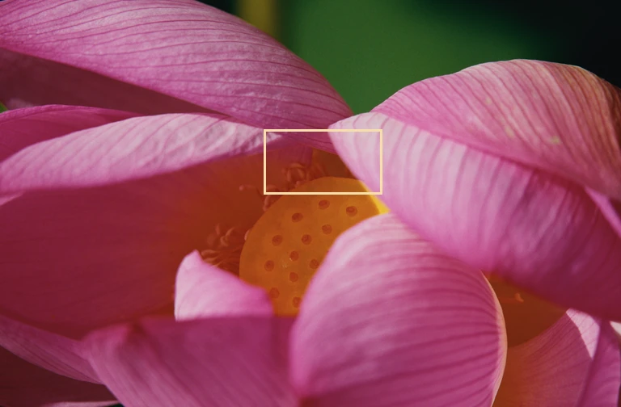
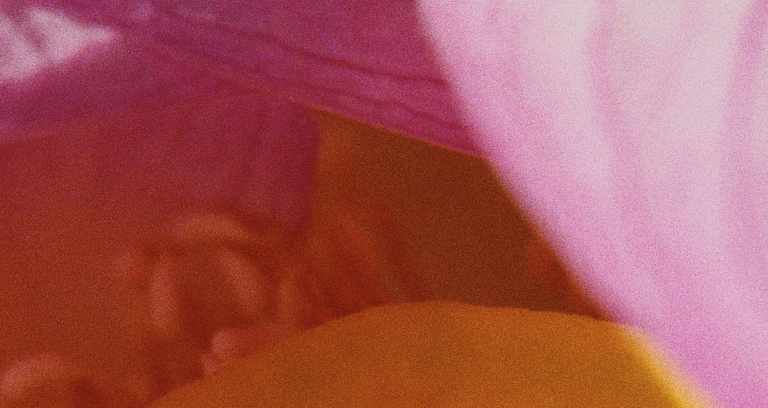

MACOS
桌面印相台
管理文件夹，软打样，组合双照片半格。也可从 Lightroom Classic 送来渲染后的 JPEG 或 TIFF 副本。
Lightroom Classic 往返说明 ↗光谱胶片模拟 / 01
选一卷胶片，换一张相纸，让同一张照片有不同的印法。Silverphase 是 Mac、iPhone 与 iPad 上免费开源的虚拟暗房。


01 / 胶片样片
每组都能在「胶片模拟」和「RAW 参考」之间切换。照片用了各自的配方，不是固定条件的胶片横评。
Fujifilm Eterna 500 / Kodak Vision 2383
Fujifilm Pro 160NS / Supra Endura
Fujifilm Reala 100 / Fujifilm Crystal Archive Type II
Ilford HP5 Plus / Ilford Multigrade IV RC
CineStill 400D / Portra Endura
Kodak Vision3 250D / Kodak Vision 2383
02 / 原生应用
从 iPhone 的相机与图库，到 Mac 上的文件夹、印相和输出。同一套渲染引擎，两套适合设备的工作流。
MACOS
管理文件夹，软打样，组合双照片半格。也可从 Lightroom Classic 送来渲染后的 JPEG 或 TIFF 副本。
Lightroom Classic 往返说明 ↗IPHONE
拍摄或导入原片，选片、评级、复制调整，再批量导出。原片和逐张编辑保存在本地图库。
移动端指南 ↗IPAD
用更宽的画布查看照片，调整胶片、显影与印相。
各平台的控件与输出选项有差别；图库不跨设备同步。
03 / 材料库
除了标准胶片，材料库还收录了 29 款实验配置：源自 MUAStudio 的 Fotufilm，经 Negs 转换后纳入 Silverphase。在胶片选择器的「实验」分类里，可拿同一张照片试出与标准胶片不同的方向。
相纸实验
两张模拟印相来自同一张 Portra 400 底片。右侧可以换相纸，也可以切回未经过胶片模拟的 RAW 参考。先看整体，再看花瓣边缘和花心。



仍是同一张底片和相同印相曝光，改用 Supra Endura 的内置中性校准。
查看 2560 px 带位置标记的对照图Apple 系统解码，未应用胶片模拟。
Portra Endura同一张 Portra 400 模拟底片，使用 Portra Endura 的内置中性校准。
Supra Endura仍是同一张底片和相同印相曝光，改用 Supra Endura 的内置中性校准。
对照条件：胶片曝光较测光基准 +0.67 EV，两种相纸的印相曝光值均为 0.88。每张相纸使用自己的内置中性校准。局部取自 4096 px 成片的同一坐标。
放大看夜景
在同一张 800T 夜景里，放大招牌的光边，再看看被照亮的路面。两张细节直接取自 7008 × 4672 渲染，没有额外锐化。
CineStill 800T / Kodak Vision 2383
35 mm · 颗粒 1× · 原胶片光晕开启


控制入片曝光、亮暗部、反差、细节与色彩。对支持的 RAW，可以匹配相机预览亮度作为起点。
入片曝光 · 影调 · 中间调细节 · 色彩
选胶片和画幅，按胶片的测光基准调整曝光。这里的胶片曝光与预处理阶段的入片曝光不是一回事。
胶片 · 画幅 · 测光与曝光
在底片阶段调整显影表现，再把得到的底片交给后面的彩色放大或扫描。
底片显影
换相纸或调整印相曝光与滤色。上面的荷花对照固定了底片和印相曝光，方便单独看相纸带来的变化。
相纸 · 印相曝光 · 滤色
选择扫描与输出设置，导出成片。桌面版如需外部调色，可查看 Cineon DI 输出说明。
扫描 · 输出 · 导出

画框之外
这条 135 片边上的齿孔、边码与帧号由 Silverphase 的引擎渲染，不是排版时后来加上的。完整展示图还选录了四款应用内的胶片封面。
带进你的设备
选一张 JPEG 或 Apple 系统支持的 RAW。用一卷胶片做出底片，再试试换一张相纸。
iOS / iPadOS 18+
App StoreTestFlightApple silicon · macOS 15+
下载 Mac 版安装说明查看实现、许可与更新记录。
GitHubMac DMG 使用临时签名，未经 Apple 公证。App Store 版暂不在中国大陆区提供，实际可用版本以商店为准。